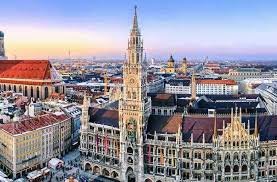
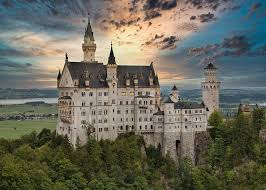

| ALEMANIA TOUR | |||
| Cultura | Lugares | Gastronomia | Tour |
| Munichin | Neuschwanstein | ||
| Si estás pensando en un lugar para hacer un tour en Alemania, Baviera y su ciudad más famosa, Múnich, es una opción excelente. Múnich no solo es famosa por su arquitectura histórica, sino también por su vibrante cultura, su gastronomía y sus tradiciones. |  | Otro lugar increíble para hacer un tour en Alemania es Neuschwanstein, el famoso castillo de los cuentos de hadas, ubicado en los Alpes bávaros, cerca de la ciudad de Füssen. |  |
| Magnolia,Jose Carlos© | |||